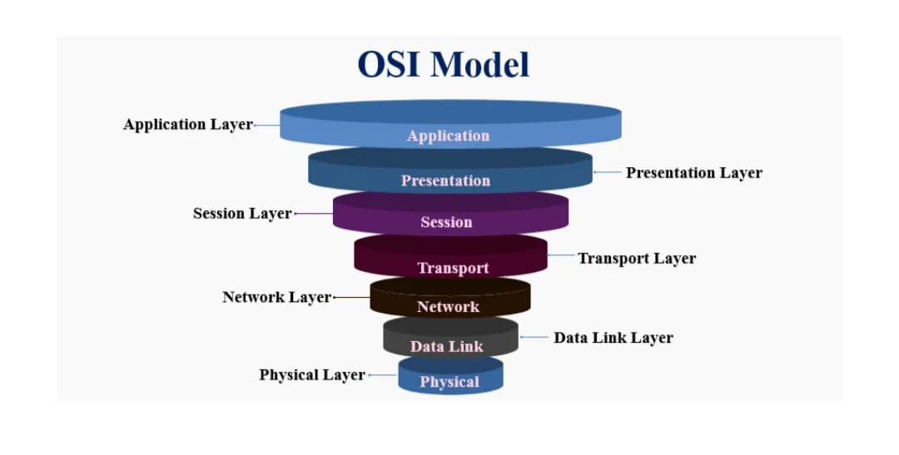

Full Definitions
The Open Systems Interconnection (OSI) Model is a framework that explains how computers communicate over a network. It has 7 layers, and each layer has a specific job. The data flows from the top layer (Application) to the bottom (Physical) and then back up at the other end.
Layer 1: Physical Layer
Handles the physical connection between devices. Transfers raw bits (0s and 1s) over cables, fiber optics, or radio signals.
Example: Cables, hubs, switches, connectors, NIC (Network Interface Card).
Layer 2: Data Link Layer
Ensures error-free transfer of data between devices on the same network. Divides data into frames, handles MAC addresses.
Example: Like traffic lights controlling cars → prevents data collision.
Layer 3: Network Layer
Finds the best path for data to travel between networks. Uses IP addresses to deliver packets.
Example: Like GPS finding the best route for your journey.
Layer 4: Transport Layer
Ensures reliable delivery of data. Breaks data into segments, checks for errors, controls flow.
Example: Like a courier service ensuring packages are delivered safely and in order.
Layer 5: Session Layer
Manages sessions (connections) between applications. Creates, maintains, and ends communication sessions.
Example: Like a phone call → starts, continues, ends when you hang up.
Layer 6: Presentation Layer
Translates, compresses, and encrypts data. Ensures that data is readable for the receiving system.
Example: Like a translator converting a book into another language.
Layer 7: Application Layer
Closest to the end user. Provides services like email, web browsing, file transfer, chat apps.
Example: Like a waiter who takes your order and brings food (services).
Short History: Why the OSI Model Exists
Extra[You can skip this during writing on notebooks. It is just an extra knowledge.]The OSI Model was developed by the International Organization for Standardization (ISO) during the late 1970s and early 1980s. Its purpose was not to be a strict implementation guide, but rather a clear conceptual framework that helps network engineers and students understand how network protocols and hardware relate to one another. Think of OSI as a language that lets different manufacturers explain where a function belongs. Physical wiring, addressing, session management, or application behavior.
Why Seven Layers? The idea behind the split
Extra[You can skip this during writing on notebooks. It is just an extra knowledge.]Dividing the communication process into layered responsibilities makes complex systems easier to design, implement, test, and troubleshoot. Each layer has a focused job and standard interfaces to the layer above and below. This modularity allows:
- Interchangeability: A new protocol can replace another inside a single layer without changing the rest of the stack.
- Specialization: Vendors and engineers can optimize one layer for performance or security without reworking everything else.
- Education: Students learn networking by isolating concepts layer by layer.
Deeper Layer-by-Layer Breakdown (with protocols & devices)
Layer 1 — Physical (Expanded)
Main job: Move raw bits across physical media.
Devices: Cables (UTP, coax, fiber), repeaters, hubs, transceivers, network interface cards (NICs), wireless radios.
Common technologies / standards: Ethernet physical specifications (10BASE-T, 100BASE-TX, 1000BASE-T), USB, Bluetooth radio specs, IEEE 802.11 PHY.
Typical problems: Cable faults, connector damage, signal attenuation, electromagnetic interference. Tools: cable testers, multimeter, spectrum analyzer.
Layer 2 — Data Link (Expanded)
Main job: Create a reliable link between two directly connected nodes; frame the bits and manage access to the media.
Sublayers: Logical Link Control (LLC) and Media Access Control (MAC).
Devices: Switches, bridges.
Key concepts: MAC addresses, framing, ARP (Address Resolution Protocol, maps IP to MAC), VLANs (Virtual LANs), error detection via CRC.
Protocols/standards: Ethernet (IEEE 802.3), Wi-Fi MAC (IEEE 802.11), PPP for point-to-point links.
Example: When two computers communicate on the same LAN, Layer 2 handles who should speak and when (collision detection/avoidance) and wraps data into frames.
Layer 3 — Network (Expanded)
Main job: Decide the path packets take from source to destination across networks.
Devices: Routers, layer-3 switches (multilayer switches).
Key concepts: IP addressing (IPv4/IPv6), routing tables, subnetting, NAT (Network Address Translation), ICMP (ping/traceroute).
Common protocols: IPv4, IPv6, ICMP, OSPF, RIP, BGP (routing protocols used between routers).
Example: When you visit a website hosted in another country, routers at Layer 3 decide which links to use so your data travels efficiently across multiple networks.
Layer 4 — Transport (Expanded)
Main job: Provide end-to-end communication between processes running on hosts. Ensure reliable data transfer (when required) and manage flow control and error checking.
Key protocols: TCP (reliable, connection-oriented), UDP (fast, connectionless, used for streaming/VoIP), SCTP (message-oriented transport).
Functions: Port numbers (allow multiple apps to use the network), segmentation & reassembly, retransmission on loss, congestion control.
Example: TCP makes sure web pages are loaded correctly by retransmitting lost packets and guaranteeing order. UDP is used for live video because speed matters more than perfect delivery.
Layer 5 — Session (Expanded)
Main job: Manage long-lived interactions (sessions) between applications: start, maintain, synchronize, and terminate sessions.
Use cases: Database sessions, remote procedure calls (RPC), video conferencing sessions where state must be maintained.
Example: When a user logs into a remote service, the session layer can provide check-pointing and recovery if connection drops briefly.
Layer 6 — Presentation (Expanded)
Main job: Translate data formats between the application and the network. Handle encryption/decryption, compression, and conversion (e.g., ASCII ↔ Unicode).
Common operations: TLS/SSL (encryption often described at Presentation/Application boundaries), data compression schemes, and character encoding transformations.
Example: When visiting a secure website, SSL/TLS encrypts the data so that it cannot be read by eavesdroppers. An operation closely associated with the presentation responsibilities.
Layer 7 — Application (Expanded)
Main job: Provide network services directly to user applications. This is where the user interacts with networked apps (web browser, email client, file transfer program).
Common protocols: HTTP(S), FTP, SMTP, IMAP, POP3, DNS, SSH.
Example: Entering a website URL triggers HTTP/HTTPS traffic at this layer; the browser renders the content to the user.
Common Practical Scenarios & How OSI Layers Work Together
Extra[You can skip this during writing on notebooks. It is just an extra knowledge.]1) Opening a website (HTTP over TCP/IP)
- Application (Layer 7): Browser requests a page (HTTP GET).
- Presentation (Layer 6): Data might be compressed and TLS encrypts traffic if HTTPS is used.
- Session (Layer 5): TLS session established and maintained.
- Transport (Layer 4): TCP breaks the request into segments and ensures ordered delivery.
- Network (Layer 3): Packets are given IP addresses and routed across networks.
- Data Link (Layer 2): Frames carry packets across each local network hop using MAC addresses.
- Physical (Layer 1): Bits are placed on wires, fiber or airwaves and travel to the next device.
2) Sending an email
Application: Your email client uses SMTP to hand message to server → Transport: TCP ensures delivery → Network: IP routes it → Data Link + Physical: deliver across each hop.
3) Live video streaming or online gaming
Often uses UDP at the transport layer because latency matters more than perfect delivery. Presentation and session layers handle codecs, synchronization, and jitter buffers for smooth playback.
Troubleshooting: Layer-based approach
When something goes wrong, OSI helps you isolate the problem quickly by asking questions at each layer:
- Physical (Layer 1): Are cables connected? Link lights on NIC? Check physical hardware.
- Data Link (Layer 2): Are MAC addresses visible? Switch port status? VLAN misconfiguration?
- Network (Layer 3): Is IP addressing correct? Can you ping the gateway? Are routes present?
- Transport (Layer 4): Are ports blocked by firewall? TCP/UDP choice correct?
- Application (Layer 7): Is the service running? Authentication working? Proper URL or credentials?
This "bottom-up" or "top-down" diagnostic style is standard practice in networking labs and help desks.
Useful Commands & Tools (for students)
- ping: check reachability (Layer 3).
- traceroute / tracert: see hop-by-hop path (Layer 3).
- ipconfig / ifconfig: see IP configuration (Layer 3 & 2).
- netstat: view open ports and active connections (Layer 4).
- wireshark / tcpdump: capture and analyze frames and packets (use carefully in labs).
Study Tips — How to remember the OSI layers
A few memory tricks that work well in class:
- Mnemonic (from top to bottom): All People Seem To Need Data Processing → Application, Presentation, Session, Transport, Network, Data Link, Physical.
- Visualize a real-world scenario (sending a letter): writing the content (App), translating language (Presentation), keeping track of the conversation (Session), packaging & numbering pages (Transport), putting destination address (Network), postal bag sorting (Data Link), truck/fuel (Physical).
- Practice with commands: ping, traceroute, netstat, then map what they tell you to a layer.
- Use a packet-capture tool on a lab machine and watch how protocols appear at different layers.
Summary & Why this matters in real life
OSI is more than an academic model. It gives a universal way to think about networking problems and solutions. When you can map a symptom (slow web page, failed login, no Wi-Fi) to a specific layer, you can focus your testing and fixes faster. Understanding OSI also helps when you learn routing, switching, cybersecurity, cloud networking, and systems integration later on.
MCQs
- Which OSI layer is responsible for physical transmission of data?
a) Network
b) Physical ✅
c) Session
d) Presentation - IP addresses are used in which OSI layer?
a) Data Link
b) Transport
c) Network ✅
d) Application - Which OSI layer is responsible for encryption and translation?
a) Presentation ✅
b) Session
c) Data Link
d) Physical - Error detection and correction are handled by which layer?
a) Application
b) Data Link ✅
c) Transport
d) Network - Web browsing and email happen at which OSI layer?
a) Transport
b) Application ✅
c) Session
d) Network
Frequently Asked Questions (Expanded)
Q1. Is OSI used directly on the Internet?
No, The Internet primarily uses the TCP/IP model. OSI is a teaching tool and a useful reference model. Many real-world protocols still map to OSI layers for explanation.
Q2. Which layer does a firewall inspect?
Firewalls can operate at multiple layers. A simple packet-filter firewall inspects Layer 3/4 (IP addresses and ports). A next-generation firewall may inspect Layer 7 (application data) for deeper security rules.
Q3. Where does HTTPS (secure web) fit in OSI?
HTTPS is an application-layer protocol (HTTP) that uses TLS for encryption; TLS functions are usually associated with Presentation and Session layer responsibilities.
Q4. Can a device work at more than one layer?
Yes. Many devices operate at multiple layers. For example, a modern multilayer switch can function at Layer 2 (switching) and Layer 3 (routing). A router primarily operates at Layer 3 but also uses Layer 1/2 features.